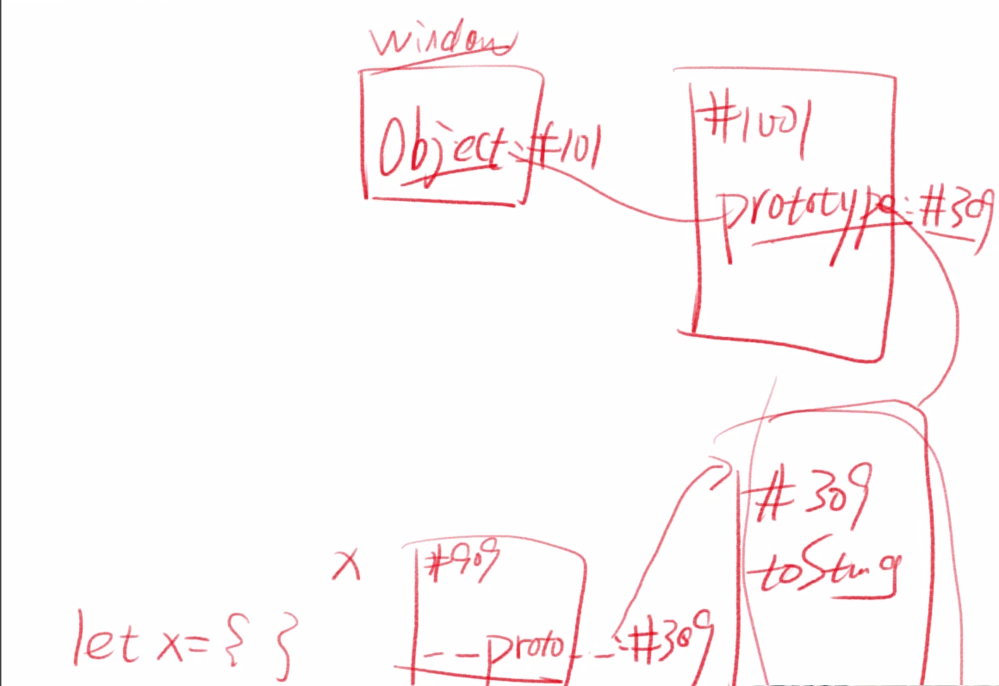

JS对象分类
构造函数(原型)
1 | function Square(width){ // 约定 构造函数的名字 首字母大写 |
new Square 自动做了以下四件事
- 自动创建了一个空对象
- 自动为空对象关联原型，且将原型的地址的指向Square.prototype,也就是此构造函数的原型
- 自动将空对象作为作为this关键字运行构造函数
- 自动return this
构造函数Square
- Square函数本身负责给对象本身添加自身属性
- Square.prototype负责保存对象的共用属性
ES6 class语法
1 | class Circle{ |
代码规范
大小写
- 所有构造函数(专门用于创建对象的函数)首字母大写
- 所有被构造出来的对象首字母小写
词性
- 构造函数(new后面的函数，只创建一类对象)，使用名词形式，如 new Person()、new Dog()、new Object()
- 其他函数一般使用动词开头，如createSquare(5)、createElement(‘div’)
- 其他规则以后再说
原型公式(JS里唯一的一个公式)
规律
- let obj = new Object()的原型是 Object.prototype
- let arr = new Array()的原型是 Array.prototype
- let square = new Square()的原型是 Square.prototype
- let fn = new Function()的原型是 Function.prototype
结论
- 你是谁构造的，你的原型就是谁的 prototype属性所对应的对象
公式
- 对象.proto === 其构造函数.prototype
问答
1 | 难度一： |

1 | 难度二： |
1 | 难度三： |
对象分类
对象需要分类吗？
理由一：
- 有很多对象拥有一样的属性和行为
- 需要把它们分为同一类
- 如 square1 和 square2
- 这样创建类似对象的时候就很方便
理由二：
- 但是还有很多对象拥有其他的属性和行为
- 所以就需要不同的分类
- 比如 Square、Circle、Rectangle就是不同的分类
- Array、Function、也是不同的分类
- 而 Object创建出来的对象，是最没有特点的对象
类型 VS 类
类型
- 类型是JS数据的分类，有七种
- 四基两空一对象
类
- 类是针对于对象的分类，有无数种
- 常见的有 Array、Function、Data、RegExp等
数组对象
定义一个数组
1 | let arr = [1, 2, 3] |
数组对象的自身属性
- ‘0’ ‘1’ ‘2’ ‘length’
- 【注意】：属性名没有数字，只有字符串
数组对象的共用属性
- ‘push’ ‘pop’ ‘shift’ ‘unshift’ ‘join’
函数对象
定义一个函数
1 | function fn(x,y){return x+y} |
函数对象自身属性
- ‘name’ ‘length’
函数对象共用属性
- ‘call’ ‘apply’ ‘bind’
JS终极一问
1 | 1. window 是谁构造的 |
测试题
- 关于「原型」，正确的是
- 「x的原型」 等价于 「x.__proto__所指的对象」，有时为了方便，我们可以认为 「x的原型」 等价于 「x.__proto__的」
- 一个对象原型指的是这个对象与其他同类对象的公有属性的 集合，比如obj1 和 obj2 同时拥有 toString/valueOf,那么 toString/valueOf 等属性组成的对象，就是 obj1 和 obj2 的原型，这个原型的地址一般储存在构造函数的 prototype里
- x.__proto__和Object.prototype存储着同一个对象的地址，这个对象就是x的原型
- 每个对象都有原型，但除了 根对象Object.prototype 比较特殊，Object.prototype这个对象的原型为空null
- 关于 prototype属性，正确的有
- 所有函数一出生就有一个prototype属性(除了箭头函数)
- 所有prototype 一出生就有一个constructor属性
- 所有constructor属性一出生就保存了对应的函数地址
- 如果一个函数不是构造函数，它依然拥有prototype属性，只是暂时没有什么用
- 如果一个对象不是函数，那么这个对象一般来说没有prototype属性，但这个对象一定会有__proto__属性
- new X()其实自动帮我们做了很多事情，这些事情包括：
- 自动创建一个空对象
- 自动将该空对象的原型指向X.prototype(即将X.prototype保存的地址复制到 空对象.__proto__里)
- 自动将空对象作为this来运行构造函数
- 自动 return this
window.Object 是一个函数对象，那么这个函数对象的构造函数是 Function
window.Function 是一个函数对象，那么这个函数对象的构造函数 Function
window.Object 是一个函数对象，那么这个函数对象的 __proto__是 Function.prototype
window.Function是一个函数对象，那么这个函数对象的 __proto__是 Function.prototype
关于Object.prototype，正确的有
- Object.prototype是 Object构造出来的对象 obj的原型
即 obj.__proto__ === Object.prototype - Object.__proto__是Object的原型，由于Object是函数，而所有函数的原型都是Function.prototype,所以
Object.__proto__===Function.prototype - Object.prototype不是Object的原型，Object.__proto__才是Object的原型
- 所有函数对象的构造函数 都是 Function
All articles in this blog are licensed under CC BY-NC-SA 4.0 unless stating additionally.